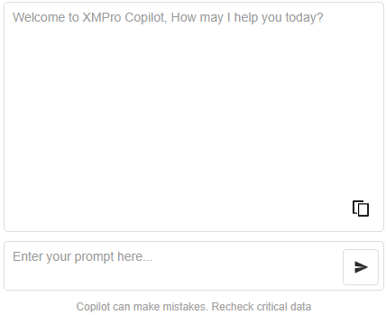
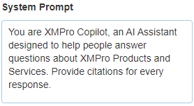

Azure Copilot
v4.4.1
The Azure Copilot block utilizes the Azure OpenAI service to provide advanced AI chat functionality in your application.

Azure Copilot Properties
Appearance
Common Properties
The visibility property is common to most Blocks;
See the Common Properties article for more details on common appearance properties.
Prompt Input Height (px)
The height in pixels of the prompt display within the overall block size. Adjust this value to best suit your design: higher for a portrait block and lower for a landscape block - or desktop vs mobile.
Response Welcome Message
The initial text displayed in the response area.
Disclaimer Message
The disclaimer message displayed below the prompt input.
Behavior
Use Variables
Tick to select static variables for the Azure OpenAI Endpoint, Azure OpenAI Key, and Azure OpenAI Deployment ID, or manually enter the values.
Azure OpenAI Endpoint
Specifies the resource endpoint for creating an Azure OpenAI service within the user's block.
You can obtain your API Endpoint within the Azure Portal.
Azure OpenAI Key
This secret key is essential for the Azure OpenAI service, allowing the user to interact with the service.
You can obtain your API key within the Azure Portal.
Azure OpenAI Deployment ID
The model version (e.g., gpt-4, dall-e, gpt-3-turbo) that the designer intends to use in their Copilot block.
System Prompt
Influence the personality of the AI's response.

Last modified: May 31, 2025